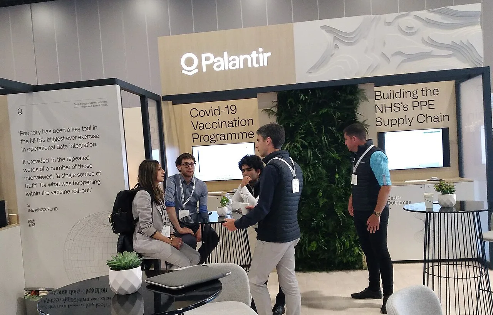

데모는 매출이 아닙니다

팔란티어는 AI 시대에 가장 설명하기 쉬운 이야기 중 하나를 갖고 있습니다. 기업과 정부가 흩어진 데이터를 연결하고, 그 위에서 AI가 판단과 실행을 돕는다는 그림입니다. AIP 시연은 강렬합니다. 그러나 주식에서 중요한 것은 시연의 인상이 아니라 고객이 실제 계약을 늘리고, 사용 범위를 넓히고, 갱신하는지입니다.
소프트웨어 회사의 좋은 신호는 데모 요청이 아니라 반복 매출입니다. 팔란티어가 높은 평가를 유지하려면 신규 고객 수와 기존 고객 확장률이 함께 좋아져야 합니다. 한 부서에서 파일럿으로 쓰는 수준을 넘어 여러 부서의 운영 시스템에 들어가야 합니다. AI가 멋진 답을 하는 것보다 업무 흐름을 바꾸는지가 더 중요합니다.
정부와 상업은 다른 속도로 큽니다
팔란티어의 뿌리는 정부 계약입니다. 정부 고객은 계약 규모가 크고 오래갈 수 있지만, 조달 절차가 길고 정치·예산 변화에 민감합니다. 상업 고객은 빠르게 늘 수 있지만, 경쟁 제품과 내부 개발 옵션도 많습니다. 투자자는 두 시장을 한 숫자로 합쳐 보기보다 각각의 성장 방식과 마진을 나눠 봐야 합니다.
상업 부문에서 중요한 것은 고객 수만이 아닙니다. 작은 계약이 빠르게 들어와도 사용량이 커지지 않으면 매출 체력은 제한됩니다. 반대로 초기 계약은 작아도 핵심 업무에 깊게 들어가면 장기 확장 가능성이 큽니다. 팔란티어 AIP의 가치는 고객이 AI를 실험하는 데서 끝나는지, 실제 의사결정과 운영에 묶이는지에서 갈립니다.
잔여 계약가치는 속도를 기다립니다
팔란티어 같은 회사는 총계약가치와 잔여계약가치가 자주 주목받습니다. 이 숫자는 미래 매출의 힌트이지만, 곧바로 매출은 아닙니다. 고객의 옵션, 해지 가능성, 단계별 도입 일정에 따라 실제 인식 속도가 달라집니다. 주가가 높은 배수를 받는 회사일수록 “언젠가 매출”보다 “언제 매출”이 더 중요합니다.
계약 전환율을 볼 때는 매출 성장률과 영업이익률을 함께 봐야 합니다. 빠른 성장을 위해 영업비용이 과하게 늘면 이익 레버리지가 약해집니다. 반대로 매출이 늘면서 영업현금흐름과 마진이 함께 좋아지면 플랫폼의 힘이 확인됩니다. 팔란티어가 AI 소프트웨어 대표주로 남으려면 이익을 희생하지 않는 성장이라는 어려운 조합을 이어가야 합니다.
높은 기대는 작은 실망도 키웁니다
이 글은 투자 조언이 아닙니다. 팔란티어는 AI 기대가 큰 만큼 밸류에이션 부담도 큽니다. 좋은 회사와 좋은 주식은 다를 수 있습니다. 실적이 좋아도 시장 기대보다 낮으면 주가는 흔들릴 수 있고, 계약 발표가 많아도 매출 인식이 느리면 프리미엄이 줄어들 수 있습니다.
앞으로 볼 숫자는 명확합니다. 미국 상업 고객 증가, 기존 고객 확장, 정부 계약 갱신, 잔여계약가치의 매출 전환, 조정 영업이익률입니다. 팔란티어의 장점은 AI를 업무 시스템에 붙이는 능력입니다. 약점은 그 기대가 이미 주가에 많이 들어가 있을 수 있다는 점입니다. 그래서 데모 영상보다 분기별 고객 확장표가 더 중요합니다.
데모가 계약서로 바뀌는 속도가 관건입니다
팔란티어의 강점은 복잡한 데이터를 빠르게 엮어 의사결정에 쓰게 만드는 데 있습니다. 특히 AIP는 기업이 인공지능을 업무 흐름에 넣고 싶어 할 때 눈에 잘 보이는 데모를 제공합니다. 하지만 주가가 오래 버티려면 데모가 파일럿으로, 파일럿이 유료 계약으로, 유료 계약이 더 큰 부서 확장으로 이어져야 합니다.
투자자가 주의할 부분은 고객 수와 매출의 질입니다. 고객이 늘어도 작은 실험 계약에 머물면 성장의 내구성이 약합니다. 반대로 고객 수 증가는 느려도 기존 고객 안에서 사용 부서가 넓어지고 계약 규모가 커지면 수익성은 더 좋아질 수 있습니다. 팔란티어는 이 확장률을 계속 증명해야 합니다.
정부 매출과 상업 매출의 균형도 봐야 합니다. 정부 계약은 크고 오래가는 장점이 있지만 예산 사이클과 정치적 판단에 영향을 받습니다. 상업 매출은 성장 여지가 크지만 경쟁이 훨씬 치열합니다. 클라우드 사업자, 데이터 플랫폼, 컨설팅 회사가 모두 기업용 AI 예산을 노리고 있습니다.
밸류에이션 부담은 늘 따라옵니다. 시장은 팔란티어를 단순 소프트웨어 회사가 아니라 AI 운영체제에 가까운 회사로 평가하려 합니다. 이런 기대가 유지되려면 매출 성장률뿐 아니라 영업이익률, 잉여현금흐름, 대형 고객 유지율이 함께 좋아야 합니다. 기대가 높을수록 작은 실망에도 주가 변동은 커집니다.
따라서 팔란티어를 볼 때는 기술 설명보다 계약의 반복성을 확인해야 합니다. 컨퍼런스에서 멋진 사례가 나오더라도 실제 청구액이 늘고, 고객이 여러 부서에서 쓰고, 해지율이 낮게 유지되어야 합니다. AI 데모는 관심을 만들 수 있지만 장기 주가는 계약서와 현금흐름이 결정합니다.
관련 영상
팔란티어 PLTR: AI 소프트웨어 거인 분석
팔란티어의 전망은 AI가 얼마나 똑똑한지가 아니라 고객 조직 안에서 얼마나 깊게 자리 잡는지에 달려 있습니다. AI 데모는 문을 열고, 계약 확장은 주가를 지탱합니다.
팔란티어를 장기적으로 보려면 매 분기 발표되는 성장률보다 고객 안에서 쓰임이 얼마나 깊어지는지 살펴야 합니다. 단순한 대시보드 판매가 아니라 업무 결정을 바꾸는 플랫폼으로 자리 잡으면 전환 비용이 높아지고 계약은 오래 갑니다. 그러나 AI 예산이 줄거나 고객이 자체 도구로 대체할 수 있다고 판단하면 기대는 빠르게 낮아집니다. 주가가 이미 높은 기대를 담고 있을수록 확인해야 할 숫자는 더 엄격합니다. 순매출 유지율, 대형 고객 증가, 현금흐름, 상업 부문 성장의 질이 함께 맞아야 합니다.
개인 투자자는 팔란티어를 볼 때 회사의 기술을 좋아하는 마음과 주식의 가격을 분리해야 합니다. 좋은 회사라도 이미 너무 높은 기대를 받으면 수익률은 제한될 수 있습니다. 반대로 시장이 성장성에 의심을 품는 순간에도 계약 지표가 계속 좋아지면 장기 기회가 생길 수 있습니다. 이 회사의 본질은 화려한 인공지능 슬로건보다 고객의 업무 안에 깊이 들어가는 능력입니다. 숫자가 그 침투를 보여줄 때 기대는 다시 근거를 얻습니다.
팔란티어의 다음 과제는 시장이 붙인 AI 프리미엄을 실제 고객 지갑으로 증명하는 일입니다. 계약이 깊어지고 현금흐름이 따라올 때 높은 기대는 단순한 이야기가 아니라 실적 근거가 됩니다.